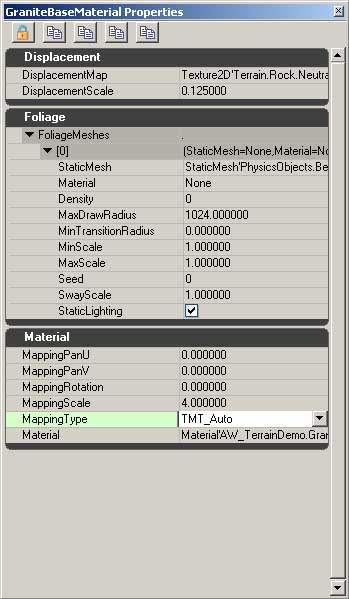
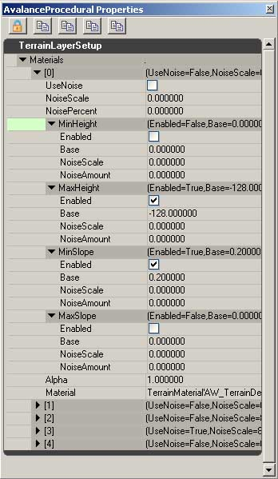

UDN
Search public documentation:
SettingUpTerrain
日本語訳
中国翻译
한국어
Interested in the Unreal Engine?
Visit the Unreal Technology site.
Looking for jobs and company info?
Check out the Epic games site.
Questions about support via UDN?
Contact the UDN Staff
中国翻译
한국어
Interested in the Unreal Engine?
Visit the Unreal Technology site.
Looking for jobs and company info?
Check out the Epic games site.
Questions about support via UDN?
Contact the UDN Staff
UE3 Home > Terrain System > Setting up Terrain in Unreal
Setting up Terrain in Unreal
Creating a Terrain Actor
Terrain Properties
Creating Terrain Layers
Terrain Materials
 Terrain Materials are used to pass the material you wish to render on to the Terrain Layer. They also contain many other properties to allow the artist to customize that material by adding displacement, foliage, or changing the scaling of the material on the terrain. To create a terrain material, use file->new in the Browser and select TerrainMaterial or right click in the Browser (on empty space) and select New TerrainMaterial. This will prompt you to name the object. After that is done, right click on the new object and select Properties. This opens up the Properties window, with 3 rollouts. Displacement contains settings for utilizing a displacement map with this material, Foliage is an expandable array of meshes to be rendered on the terrain (covered in section 3), and Material covers all the properties for rendering a pixel shader on the terrain.Displacement
DisplacementMap uses a grayscale image to move the vertices of the terrain along the surface normal. To create a displacement map, create a texture in a paint program that can store alpha channels, and put the displacement map in that channel. Save as a 32bit .TGA and import into Unreal Engine 3.0 with TC_DisplacementMap as the compression setting. Use this texture in the DisplacementMap field in the TerrainMaterial. The scaling factor below the DisplacementMap field adjusts the strength of the displacement.Foliage
Foliage contains an empty array, which can be added to by clicking on the + symbol that appears on the right side of the FoliageMeshes rollout. Adding an entry to this array will reveal a set of options that determine where and how the assigned mesh will render. StaticMesh - Enter the mesh you wish to use as foliage Material - Override the material assigned to the mesh Density - Number of meshes per quad MaxDrawRadius - Furthest away you will see a mesh MinTransitionRadius - How far away will the mesh cease to blend/scale in MinScale - Uniform scale modifier MaxScale - Uniform scale modifier Seed - Sets random distribution SwayScale - Multiplier for windsources StaticLighting (flag) - Switches between lighting styles for foliageMaterial
Material contains the options for how the shader is mapped onto the terrain. MappingPanU - offsets the default mapping along U MappingPanV - offsets the default mapping along V MappingRotation - Offsets the default rotation MappingScale - Uniformly scales shader on terrain MappingType - Determines the mapping plane to use on terrain Material - What shader to use on the terrain.Terrain Layers
 TerrainLayerSetup objects are used to create Terrain Layers. Creating a TerrainLayerSetup is much the same as creating a TerrainMaterial, however instead of assigning the shader to use, we assign TerrainMaterials. TerrainLayerSetups can contain as many TerrainMaterials as you choose to enter, but it is important to note that they stack from the top down, so that entry [0] will be rendered on top of entry [1]. This is the list of settings in a TerrainLayerSetup. UseNoise - Set this flag to enable noise for this terrain material. NoiseScale - Determines the scaling value of noise if UseNoise is enabled. NoisePercent - How noisy this material will be. Most values in the range of 0.00 to 1.00. Min/MaxHeight - Used in procedural terrain texturing. Clamps this material to being rendered if terrain is within limits set in properties. Enabled - If flagged, enabled this branch of procedural texturing. Base - Value in world-space to clamp this material to. Min of 128 and a max of 1024 will cause material to only appear if terrain height is between those two values. NoiseScale - Frequency of noise affecting base height. Smaller values will give more noise. NoiseAmount - Amount of noise added to the base amount. Min/MaxSlope - Used in procedural terrain texturing. Clamps this material to being rendered if terrain angle is within limits set in properties. Most properties are the same as Min/MaxHeight. Base in this case refers to the angle of the slope. 0 is 0 degrees, 1 is 45 degrees, scaling up to 90 degrees being infinity. Alpha - The overall strength of this section of the terrain layer to be rendered on the terrain. Setting a value of .5 will render the current terrain material at half-opacity on the terrain. Material - The terrain material to be used in this portion of the layerDecoration Layers
StaticMeshFactory, which contains the settings for what mesh you wish to use, whether the mesh will be visible in the game, in the editor, if it will cast shadows, and how it will collide with the player and the world.
MinScale - The smallest scale that the mesh will appear as.
MaxScale - The largest scale that the mesh will appear as.
Density - The density of meshes that will be placed when painting.
SlopeRotationBlend - Percentage of terrain angle that will be passed on to meshes painted onto the terrain
RandSeed - The random seed for the placement of meshes.